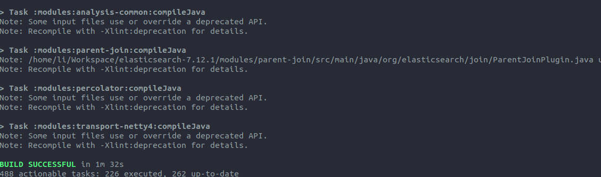

环境说明
| 参数 |
说明 |
| OS |
Ubuntu 20.04.2 LTS |
| CPU |
Intel(R) Core(TM) i5-4210H CPU @ 2.90GHz |
| MEM |
12177392 KB |
下载准备
下载源码
这里使用的是 Elasticsearch 7.12.1
Elasticsearch Download
下载JDK
这里使用的是 Jdk 15.0.2
JDK Download
环境准备
配置 gradle
在用户根目录创建目录 .gradle，并在其中创建 init.gradle 文件，然后填写下述内容
1
2
3
4
5
6
7
8
9
10
11
12
13
14
15
16
17
18
19
20
21
22
23
24
25
26
27
28
29
30
31
32
33
|
allprojects{
repositories {
def ALIYUN_REPOSITORY_URL = 'https://maven.aliyun.com/repository/public/'
def ALIYUN_JCENTER_URL = 'https://maven.aliyun.com/repository/jcenter/'
def ALIYUN_GOOGLE_URL = 'https://maven.aliyun.com/repository/google/'
def ALIYUN_GRADLE_PLUGIN_URL = 'https://maven.aliyun.com/repository/gradle-plugin/'
all { ArtifactRepository repo ->
if(repo instanceof MavenArtifactRepository){
def url = repo.url.toString()
if (url.startsWith('https://repo1.maven.org/maven2/')) {
project.logger.lifecycle "Repository ${repo.url} replaced by $ALIYUN_REPOSITORY_URL."
remove repo
}
if (url.startsWith('https://jcenter.bintray.com/')) {
project.logger.lifecycle "Repository ${repo.url} replaced by $ALIYUN_JCENTER_URL."
remove repo
}
if (url.startsWith('https://dl.google.com/dl/android/maven2/')) {
project.logger.lifecycle "Repository ${repo.url} replaced by $ALIYUN_GOOGLE_URL."
remove repo
}
if (url.startsWith('https://plugins.gradle.org/m2/')) {
project.logger.lifecycle "Repository ${repo.url} replaced by $ALIYUN_GRADLE_PLUGIN_URL."
remove repo
}
}
}
maven { url ALIYUN_REPOSITORY_URL }
maven { url ALIYUN_JCENTER_URL }
maven { url ALIYUN_GOOGLE_URL }
maven { url ALIYUN_GRADLE_PLUGIN_URL }
}
}
|
配置环境变量
1
2
|
JAVA_HOME=/home/li/Software/jdk-15.0.2
PATH=$PATH:$JAVA_HOME/bin
|
编译 Elasticsearch
1
2
|
cd /home/li/Workspace/elasticsearch-7.12.1
./gradlew clean :distribution:archives:oss-no-jdk-linux-tar:assemble
|

IDEA 导入
配置 gradle
配置 Elasticsearch
这里，所有将 elasticsearch 的代码放置在 /home/li/Workspace/elasticsearch-7.12.1
创建 es-home 目录
名称不一定是 es-home ，但是需要与下文保持一致
1
|
mkdir -p /home/li/Workspace/elasticsearch-7.12.1/es-home
|
将前面编译出来的elasticsearch-oss-7.12.1-SNAPSHOT-no-jdk-linux-x86_64.tar.gz解压出来的 config 和 modules 两个目录拷贝到 es-home下面。
创建 elasticsearch.policy 文件
1
|
touch /home/li/WorkSpace/elasticsearch-7.12.1/es-home/config/elasticsearch.policy
|
并写入以下内容
1
2
3
4
5
6
|
grant{
permission java.lang.RuntimePermission "createClassLoader";
permission java.lang.RuntimePermission "getClassLoader";
permission java.lang.RuntimePermission "accessDeclaredMembers";
permission java.lang.RuntimePermission "setContextClassLoader";
};
|
配置 VM options
1
2
3
4
|
-Des.path.home=/home/li/Workspace/elasticsearch-7.12.1/es-home/
-Des.path.conf=/home/li/Workspace/elasticsearch-7.12.1/es-home/config
-Djava.security.policy=/home/li/Workspace/elasticsearch-7.12.1/es-home/config/elasticsearch.policy
-Dlog4j2.disable.jmx=true
|
选择启动类启动
启动成功
遇到的问题
Unknown codebases
注释掉 elasticsearch-7.12.1/server/src/main/resources/org/elasticsearch/bootstrap/security.policy中的下述语句
1
2
3
4
5
6
7
8
9
10
11
12
13
|
grant codeBase "${codebase.elasticsearch-secure-sm}" {
permission java.security.AllPermission;
};
grant codeBase "${codebase.elasticsearch}" {
// needed for loading plugins which may expect the context class loader to be set
permission java.lang.RuntimePermission "setContextClassLoader";
};
grant codeBase "${codebase.elasticsearch-plugin-classloader}" {
// needed to create the classloader which allows plugins to extend other plugins
permission java.lang.RuntimePermission "createClassLoader";
};
|